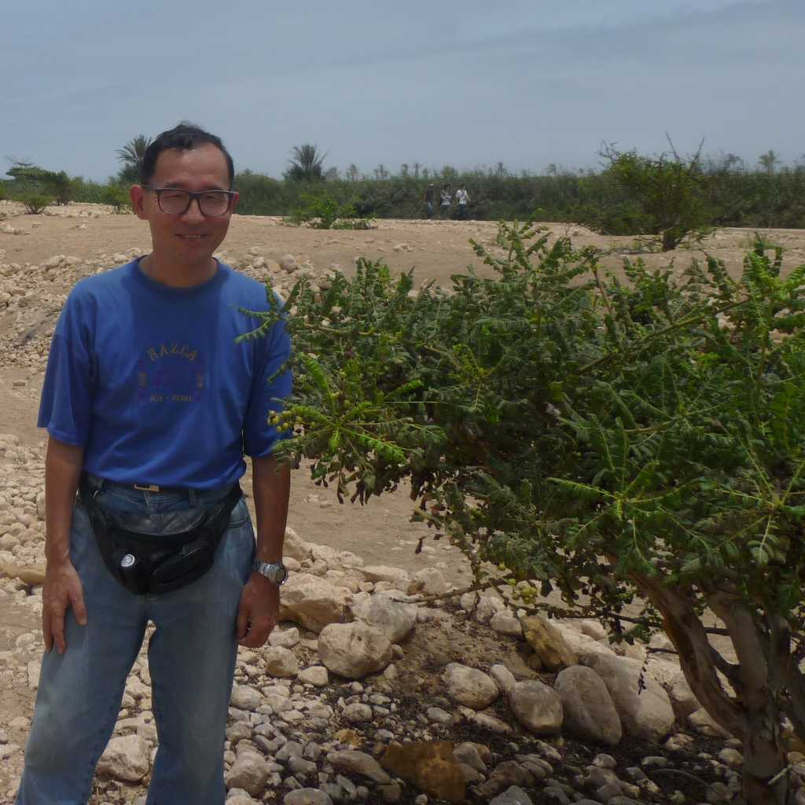
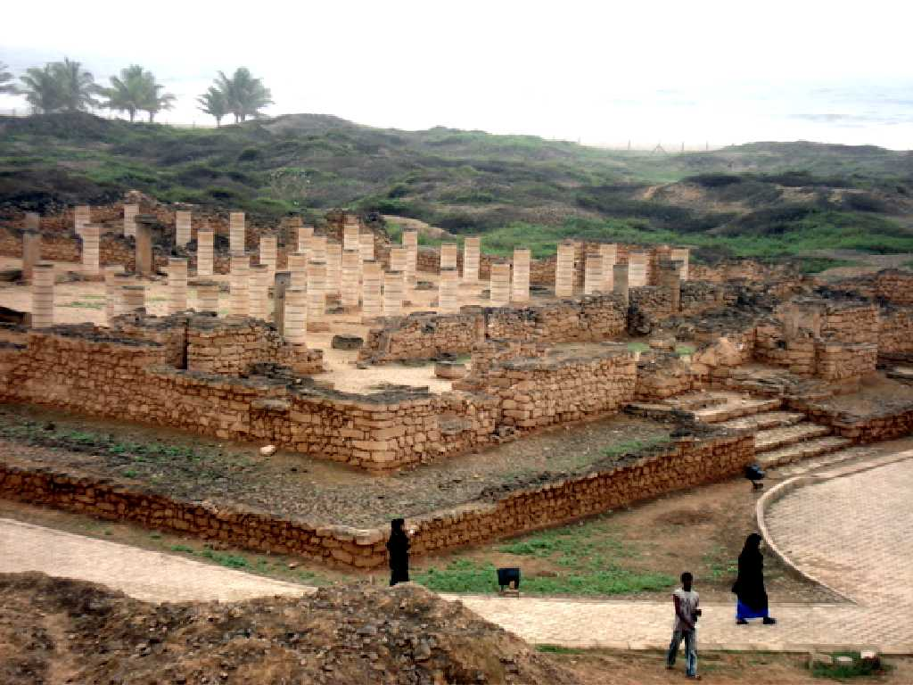
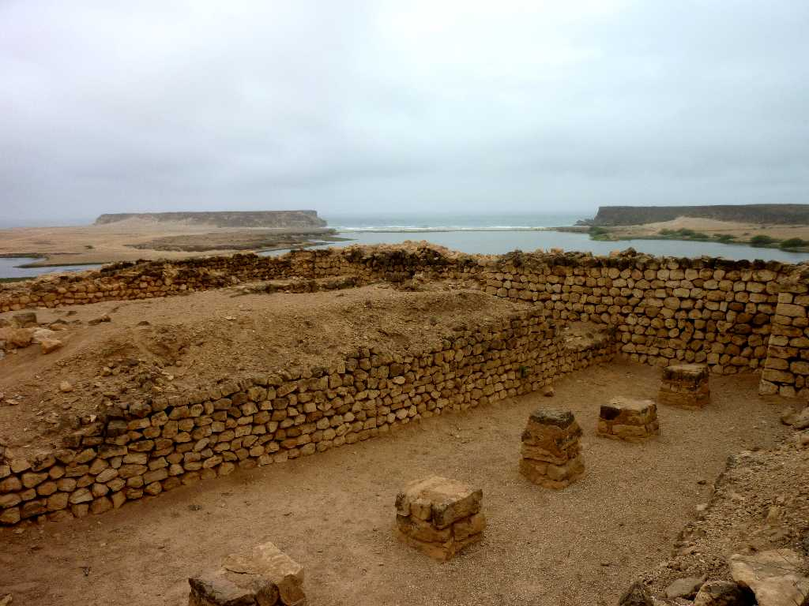
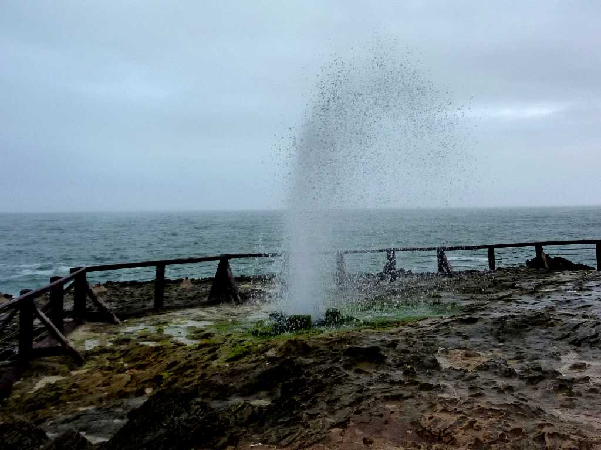
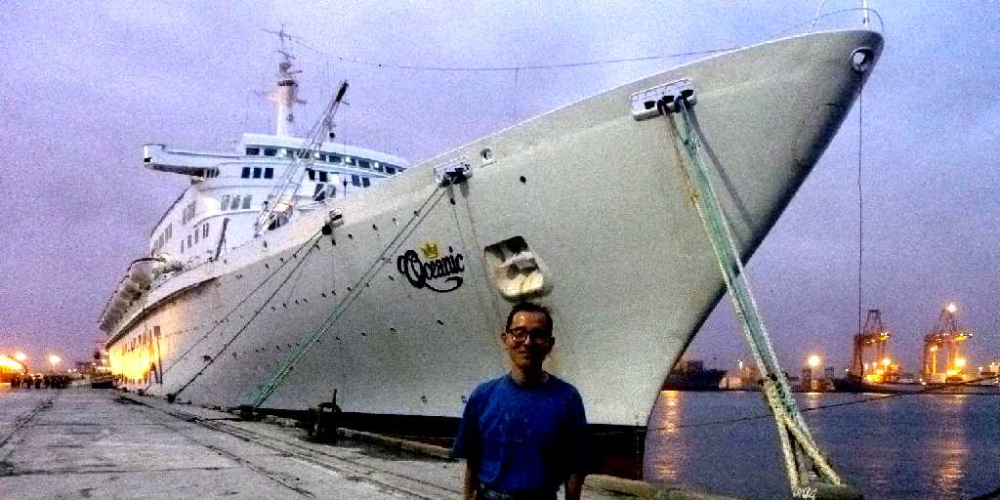

August 20 2010 Salalah Frankincense Tree & Frankincense
幸福のアラビアと言われ同じ重さの金と取引された 乳香の交易港湾都市サラーラにある乳香の木で奥地には群生地がある

Al Baleed
紀元前１３００年から前３００年頃まで栄えた港町であったアルバリード遺跡

Sumhuram Khor Rori
紀元前１世紀に創られたシバ王国の乳香の積出港であったサムフラム遺跡

Magsail Salalah

August 20 2010 SS Oceanic in Salalah Port